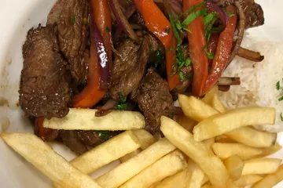

Gabby's has been around for a year or two. My wife and I have eaten here several times,
and the food is always great! The first time I ate there I got the Lomo soltado.
This was essentially beef stir-fry, and it was wonderful!
The next visit I ordered a Chicharron sandwich. This was
a fried pork tenderloin sandwich with fried sweet potatoes on it!
Very interesing, and very good! On this same visit my wife ordered the House Tilapia.
TLDR; Gabby's is worth a visit if you enjoy South American cuisine.
- More information about Gabby's
- Click here to visit the website
- Click here the facebook page
The Lomo Saltado
Brief Review
While you wouldn't expect it from the location, Gabby's has a great atmosphere! The dining area is clean, homey, with great Peruvian artwork. The service has been good every time we have eaten here. The food is outstanding, as I have already mentioned. At roughly the same price of an applebees or chili's, Gabby's is a great deal for the quality. I give Gabby's 4 out of 5 stars!